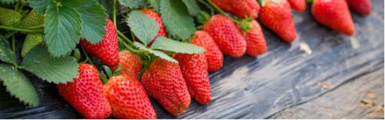
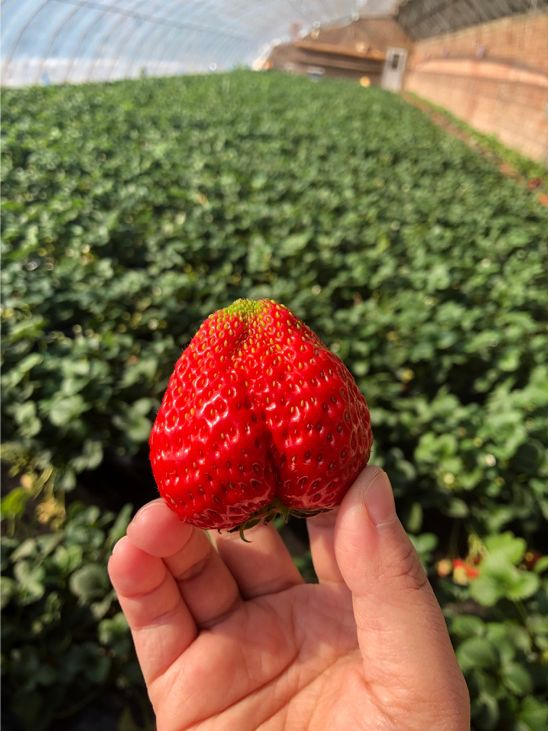
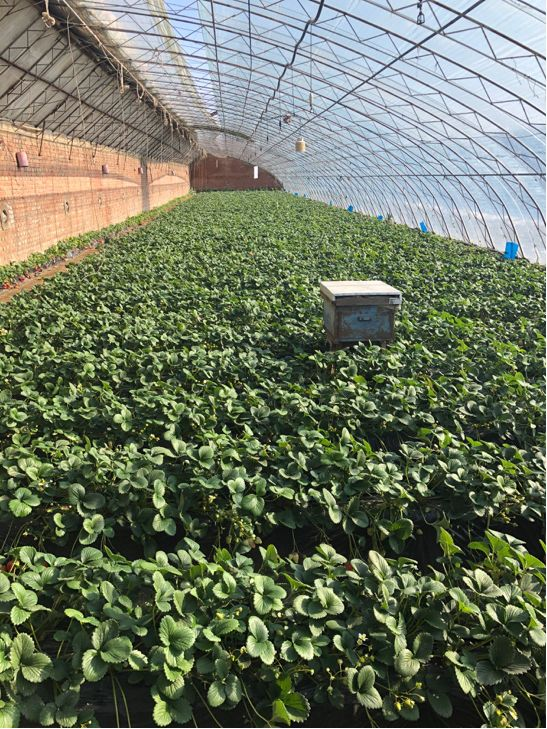
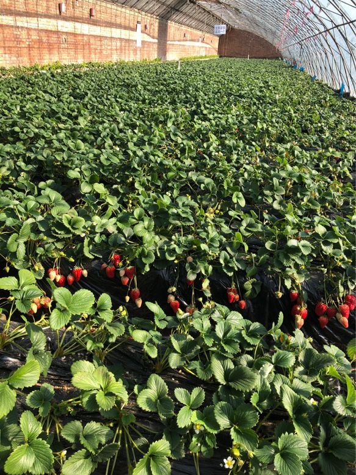

草莓等不到疫情结束，农户们着急了
原文链接 备份链接 丹东草莓 （图片来源：谢长城） 记者：马越 编辑：牙韩翔 “ 疫情影响下的农产品物流运输、保鲜成了问题，眼下电商几乎成为了唯一的销售渠道。 ” “我们村没有疫情，没有流动人口，草莓摘好就可以马上包装发走。”徐金在朋友圈 …


作者 | 周纯 编辑 | 杨颢
出品 | 棱镜·腾讯小满工作室
欢迎下载腾讯新闻APP，阅读更多优质资讯

尽管批发收购的价格不及往年，但总算把今年第一茬草莓全部卖出去了，没有烂在地里，刘嫂暂时松了一口气。
刘嫂是北京郊区的一名莓农，她所在的兴寿镇，距离北京中心区域直线距离仅35公里，以盛产本地草莓闻名，经过数十年的发展，已经拥有了“京郊草莓第一镇”的名号。
根据《农民日报》报道，目前兴寿全镇草莓种植5300多栋（栋，指一个大棚），产量5500吨，产值达2.1亿元。这一组数据的背后，是一个个像刘嫂这样的小种植户们的共同成果——他们大多来自外地，在此租种大棚。
刘嫂告诉《棱镜》，往年春节这段时间，是草莓园最热闹的时候，驾车来采摘的、上门来收购的，络绎不绝。今年受疫情的影响，草莓园冷清了不少。
于是，各路人马、各种方法齐上阵，只为了将尽可能多的新鲜草莓卖出去，送到“吃货”们的手中。

兴寿草莓

在兴寿种草莓
第一年种草莓就碰上疫情这种特殊情况，刘嫂一家一开始有点措手不及。
一年前，在儿子小刘的安排下，刘嫂和丈夫从老家河北沧州来到兴寿，开始了草莓种植之路。
大学毕业的小刘在北京的一家互联网公司工作，他考察了一圈后得出一个结论：种草莓风险比较低，顶多不挣钱，但赔钱比较难。在兴寿镇看了几个草莓园之后，他最终选择在沙坨村租了两个大棚，年租金为2万元。
一个大棚年租金1万元，是兴寿草莓园的市场价。种草莓是一项辛苦活儿，很多兴寿本地人选择将大棚租给外地人，租金旱涝保收。刘嫂向《棱镜》介绍，她所在的这个草莓园中，来自河北邯郸、张家口、沧州等地的人承包占大多数，本地人自己种植的比例不到一半。
除去租金，一个大棚需要种植5000多株草莓苗，一株一块钱；另外，棚顶的塑料膜需要每年更换，加上肥料等其他开支，一个大棚一年的固定投入在2万多元，产量在2000斤左右。按照20多元/斤的均价计算，正常情况下，一个大棚一年的纯收入在2万元左右。
与他们同在一个草莓园的小艳今年租了6个大棚，是该园里承包大棚最多的租户。33岁的她已经是这里的老租户了，从2013年起就从老家邯郸来此种草莓，一种就是7年。

小艳家的草莓大棚
从一开始慢慢摸索到现在，小艳去年租的四个棚一共卖了20万元，纯收入几万元，她觉得很知足。
在距离小艳4公里之外东庄村，她的老乡小翠租了10个大棚，属于“散户”种植中的大户。小翠也是一名85后，2014年在老乡的介绍下，找亲戚朋友借了十万块钱作为投入，举家来到兴寿种草莓。
她至今仍清楚地记得，那一年农历9月份就下雪了，由于缺乏经验，草莓花全部冻黑了。好在，最后本钱还是卖回来了，“就是白干了一年，收集了经验。”
此后，小翠的生意一年比一年好，而小翠也盘算着今年会有个好收成——草莓喜欢温暖的环境，大棚里保持25℃的温度最佳，今年算暖冬，所以产量不错。
把草莓卖出去
如今，刘嫂小翠小艳们都面临着如何把草莓卖出去的问题。
草莓一般11月份开始陆续上市，一直能采摘到第二年的5月份。每年春节期间是采摘的高峰，小艳记得她往年一天要接待二三十户上门采摘的家庭，今年受疫情影响，大家都不敢出门了，这些天一户上门采摘都没有。上门自己采摘的价格也由去年的40—50元/斤，降到了现在的30元/斤。
按照小艳的说法，去年她年前的两个月就已经回本了，但今年到现在本金才回了不到一半。
小翠告诉《棱镜》，她们的草莓销售平时主要依靠三个渠道：客户上门采摘、草莓商贩上门批发，以及同城快递配送。在第一种方式目前遇阻的情况下，后两种渠道成了小翠们如今绞尽脑汁发力的方向。
事实上，此前仅草莓商贩批发，就能占到小翠全部销量的三分之二。草莓商贩在草莓园批量收购草莓，再通过自己的渠道卖到市区，相当于一个中介的角色。据小翠介绍，通常好几家莓农固定“养”一两个草莓商贩，在几户大棚中转着圈摘。
辛师傅(化名)就是小翠她们口中的草莓商贩，从小翠们那里收购回来的草莓，他会送到昌平固定的几个小区。专做季节性水果配送的他，号称从田间地头到客户家里绝对不会超过3个小时。
他告诉《棱镜》，以往他一天可以卖掉五六百斤草莓，现在受疫情的影响，销量有所下降且不稳定，但每天也至少能卖300斤左右。
正是靠着这个收购渠道，刘嫂将第一茬草莓都卖了出去。但价格上，用她的说法，比成本可能还要低一点，但也比烂在地里强多了。
另外，得益于这些年物流行业的飞速发展，顺丰、京东快递都能做到同城当日送达；加之“闪送”等同城快递也陆续兴起，使得年轻一点的小翠们的草莓，能通过快递卖到市区。
据小翠介绍，同城快递一箱4斤的草莓，顺丰的快递费为21元，京东快递为14元。此外，运输草莓还需要专门定制的快递盒，一套批发价12元，算下来，一盒草莓的运输成本至少26元。
但好处是，相比刘嫂低价卖给中介，小翠能保证价格，减去成本，至少略有盈利。2月9日当天，小翠就快递出了十几箱草莓。
事实上，由于保存时间短、对温度要求高、轻微的磕碰都极容易引起腐坏等一系列特点，使得草莓不适合远距离运输，这也是草莓始终没有被大规模电商化的原因。
北京农学院的孙杨在2018年一篇题为《兴寿镇草莓行业电商销售渠道现状分析》的论文中指出，根据调研兴寿镇只有8%的生产者在使用电商渠道进行销售。其中有两家还是通过贩卖而发展的电商，而且基本上还是属于给附近的客户运送。

成熟待采摘的草莓
“草莓团购群”来了
相比较商贩收购、同城快递，客户上门采摘由于客单价最高，无需运输成本，过去一直是小艳首选的销售方式。她记得往年春节期间，一天就要接待二三十户上门采摘的家庭。
于是小艳开始思考，既然现在客户无法上门采摘，那她们就将草莓摘好送过去。
社区团购是她如今主攻的一个销售渠道。多年的经营让她积攒了一批回头客，由这些熟客在自己的小区群里帮她发起团购，达到一定的数量她就将草莓送到小区里。往年她定的标准是50斤起送，在今年这种特殊行情下，她将起送标准降到了20斤。
另外，在社区团购的营销上，小艳也动了一些心思，比如，对于一次性购买一箱（4斤）的客户，她会主动送一份自己种的有机蔬菜，或者鸡蛋——都是每个都市家庭用得上的食材，受到了不少客户的好评。
对小翠而言，社区团购也是她青睐的一种渠道：直接将草莓从大棚里送到客户手中，能最大限度保持草莓的新鲜和口感；自己直接和客户对接，没有中间商赚差价，皆大欢喜。
“今天（2月10日）就有一位大姐帮我在她的同事群里团购了150斤。”小艳兴奋地说道，大家都知道今年的草莓不好卖，不少老客户一直在帮她打广告，这让小艳很感动。
《棱镜》了解到，如今类似的“草莓团购群”几乎成了每个小区的标配，十来个人就可以拼成一团。回龙观某小区的一位团购群主吴女士对《棱镜》表示，这样团购的草莓比从市场上买的要便宜，而且更新鲜、口感也更好，还能送货上门，她们群里几乎每周都会开团一到两次。
家住昌平的张先生是为数不多近期去草莓园采摘的客户。从莓农口中了解到草莓滞销的情况后，他特意多采了几斤带回来。尽管交通费用和采摘费用平摊下来，让他的草莓高达50元一斤，但他觉得很值：“心情的改善远比多花一点钱来得重要。”
目前，通过社区团购这种方式，小艳一天最多可以卖出上百斤草莓，虽然比不上往年旺季的销量，但也比小艳预想的要好多了。尤其这几天随着第一茬草莓接近尾声，市场上草莓供求关系开始发生变化，草莓价格也有明显回升的趋势。
帮扶草莓小镇
除了莓农自己在积极拓展销售渠道之外，政府也开始采取一些助农措施。
据《棱镜》了解，2月5日，昌平区农业技术推广站、土肥站、植保站的站长和副站长带队，去实地查看了兴寿莓农种植和草莓积压的情况，随后又以村为单位，将所有草莓种植户拉群，统计各家目前草莓的成熟产量。
《棱镜》在其中的一个群里看到，该村有70多户草莓种植户，根据他们的申报，每个大棚约有100-200斤草莓待销。
此外，为了解决疫情期间农产品产销信息不对称问题，政府还开发了一款“农产品供求信息上报微信小程序”，生产企业可以上报农产品供应信息和农资需求信息，经销商可以上报农产品需求信息。相关工作人员在上述群里组织莓农填写，并跟踪销售情况。
草莓只是近期农产品滞销的一个缩影，在此背景下，一些大的电商平台也纷纷行动，帮助全国各地优质农产品的销售。据淘宝方面2月10日表示，其上线的“吃货助农”频道第一批优选了山东、四川、浙江、辽宁等六省十款滞销优质农产品，该频道上线3天，销售农产品已超过300万斤。
拼多多也于2月10日正式上线“抗疫农货”专区，覆盖全国近400个农产区包括230多个国家级贫困县，商品囊括脐橙、苹果、草莓等各类水果和主要生鲜食材。
“终于有人帮我们了！”小艳告诉《棱镜》，尽管目前这些措施还没看到明显的成效，但她觉得，以一个好价格卖掉自己辛苦种植的草莓，应该不是一件难事了。


感谢您的阅读，欢迎在文后留言并点击“在看”，留言点赞第一名且60以上，获得一个月腾讯视频会员哦~ （截止时间：下周一下午18：00）
聚焦中国科技创新，书写深度商业故事
欢迎关注深网公众号，阅读更多优质原创内容。


扫码查看腾讯新闻客户端相关文章

本文版权归“腾讯新闻”所有，如需转载请在文后留言，经允许后方可转载，并在文首注明来源、作者及编辑，文末附上棱镜二维码。
第576期
实习运营编辑：陈诗雨 黄贺
点击“阅读原文”，查看腾讯新闻客户端相关独家文章！
你“在看”我吗？
原文链接 备份链接 丹东草莓 （图片来源：谢长城） 记者：马越 编辑：牙韩翔 “ 疫情影响下的农产品物流运输、保鲜成了问题，眼下电商几乎成为了唯一的销售渠道。 ” “我们村没有疫情，没有流动人口，草莓摘好就可以马上包装发走。”徐金在朋友圈 …
原文链接 备份链接 作者：张霞 来源：*商业人物*（ID：*biz-leaders）* 壹 2020年，王明发最后悔的事情是去年砍掉了一亩多地的大樱桃树，建了两个草莓大棚。 大樱桃是山东鲁中一带的“土称呼”，其实就是国产车厘子。我们村庄 …
原文链接 备份链接 《第一财经》YiMagazine告读者 _ _ _ 因疫情持续，杂志在印刷和物流配送等环节受到很大影响，2月刊肯定已经无法按时出版。 《第一财经》YiMagazine编辑部因此决定将2020年2月刊、3月刊合并出版。合 …
原文链接 备份链接 _ 在新冠肺炎疫情中心区域，远比平时忙碌的快递员在街头难见其他人，遇到别家公司的快递员，大家叫不上名字，但都打个招呼，在特殊的时点里惺惺相惜 _ 文 |《财经》记者 俞琴 编辑 | 鲁伟 新冠肺炎疫情在武汉蔓延后，整座 …
原文链接 备份链接 作者 | 王晓 编辑 | 杨颢 出品 | 棱镜·腾讯小满工作室 欢迎下载腾讯新闻APP，阅读更多优质资讯 “（款项结算）非常及时、高效，减轻了我们公司在承接项目时的资金垫付压力。”2月10日，湖北恒祺建筑装饰工程有限公 …